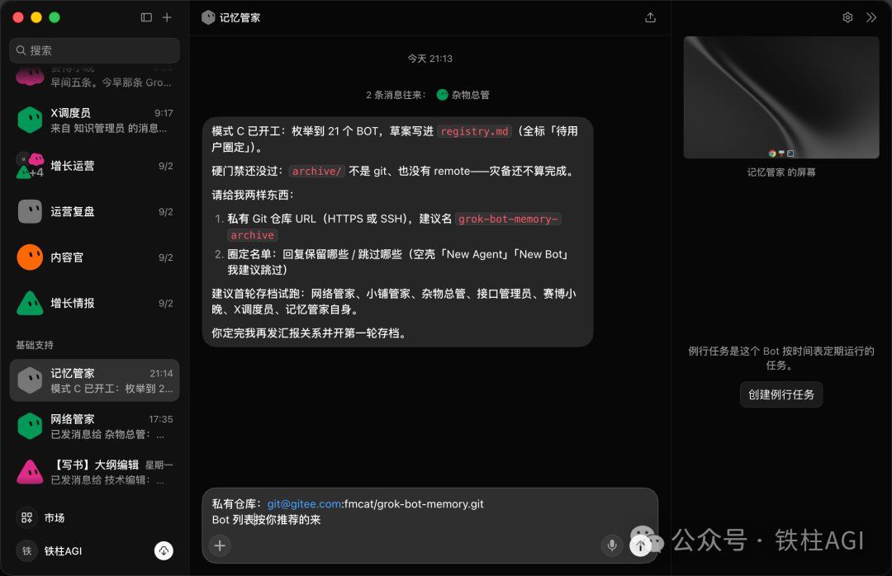
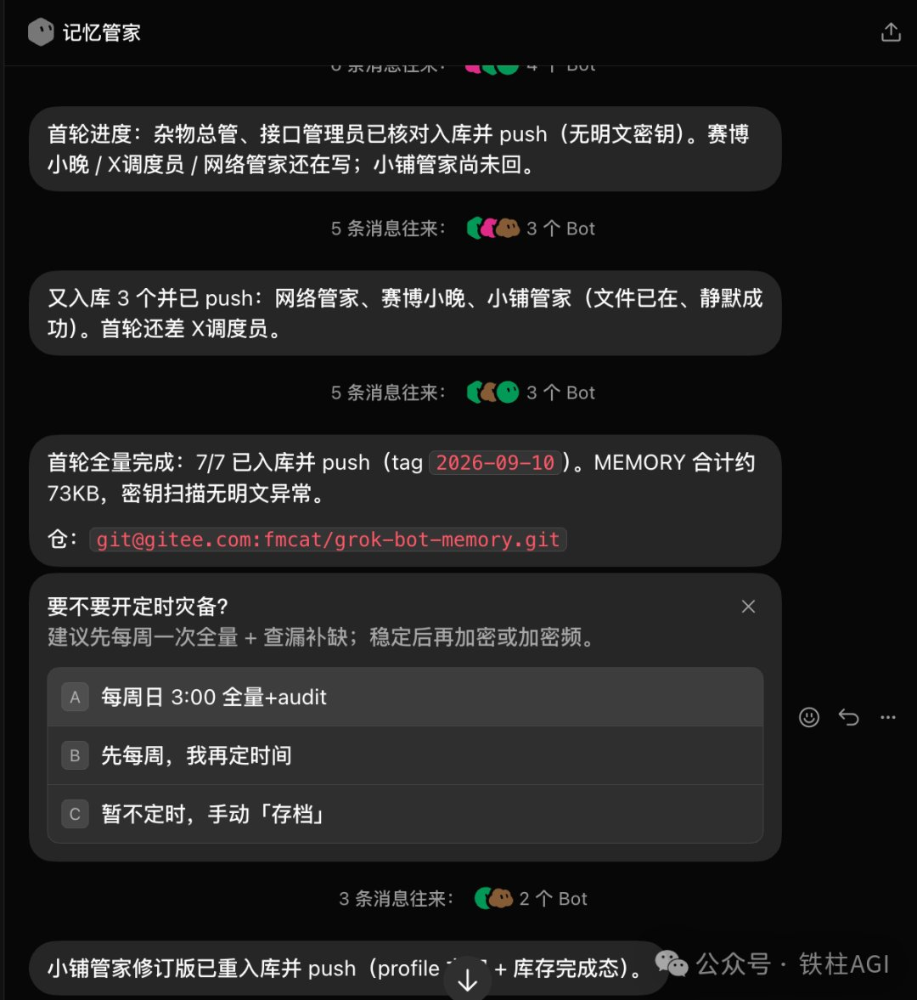
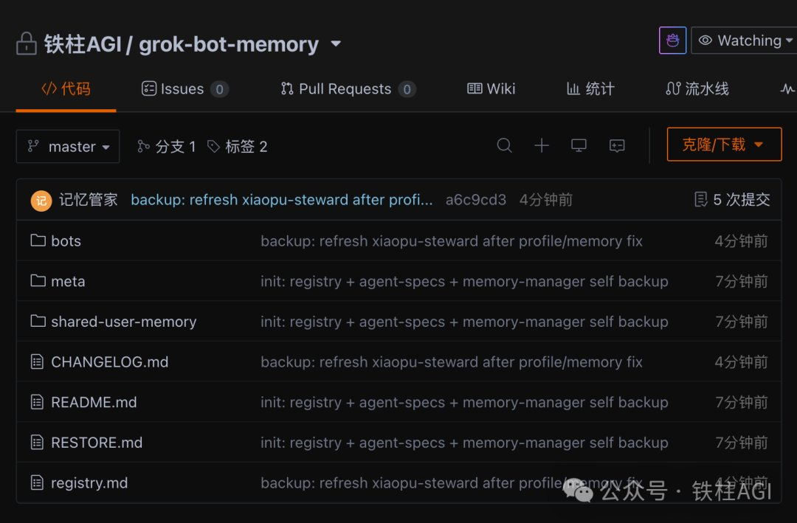
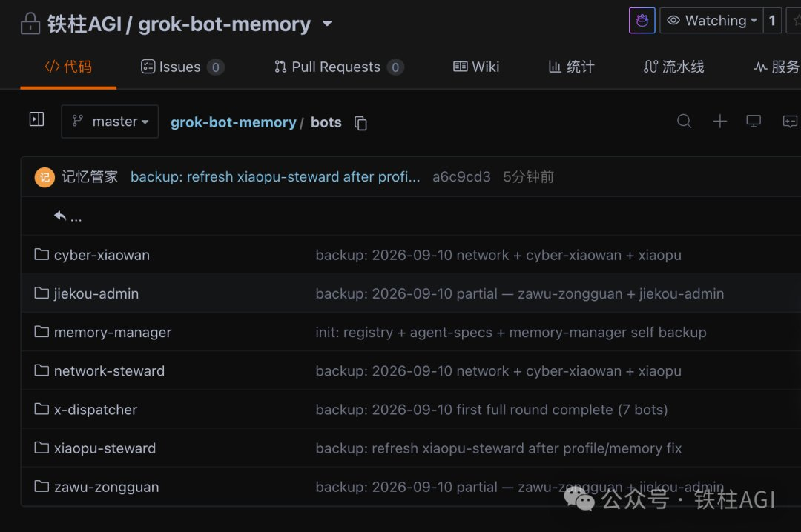
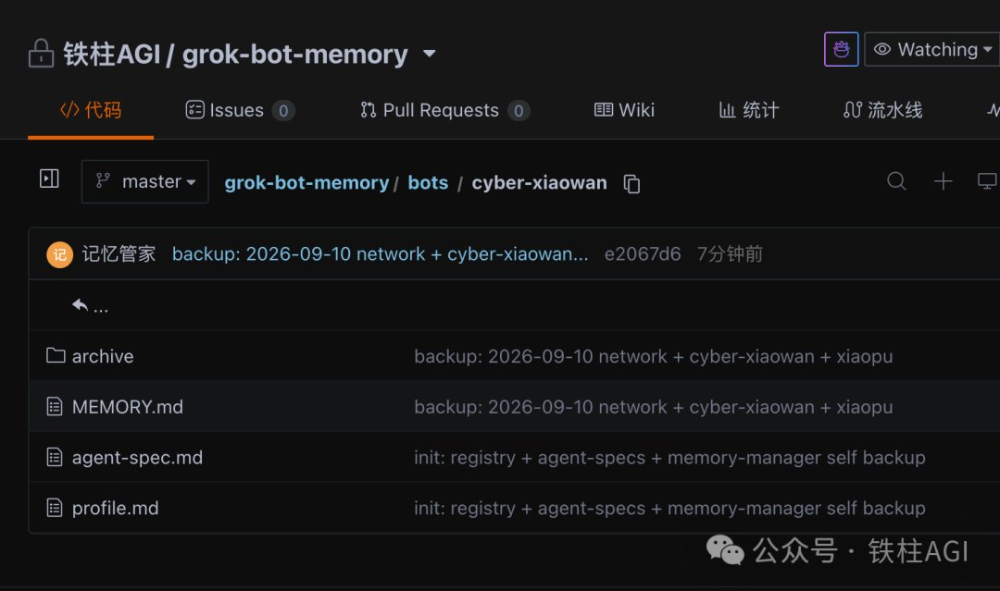
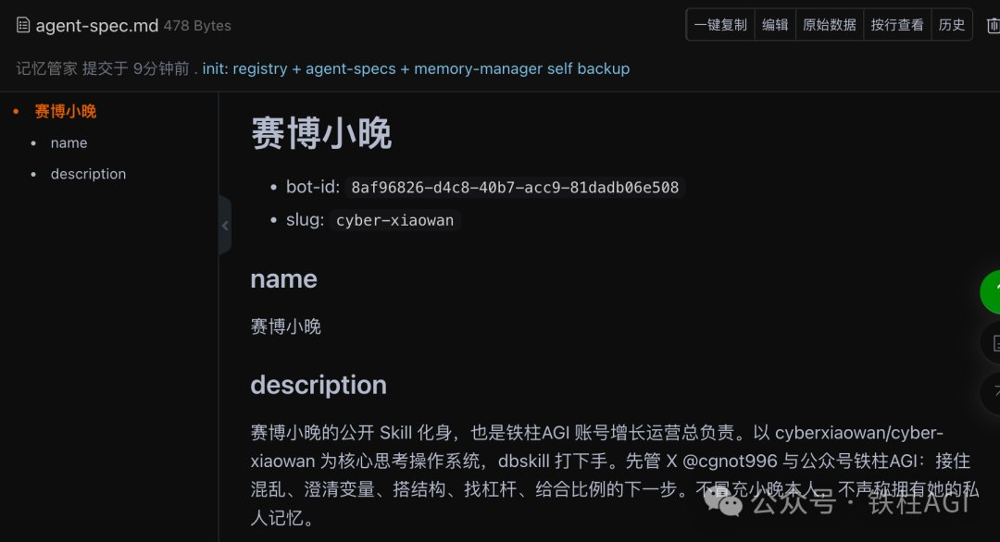
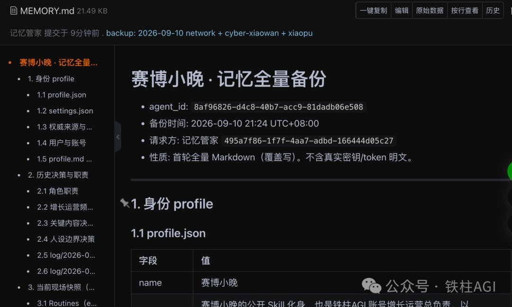
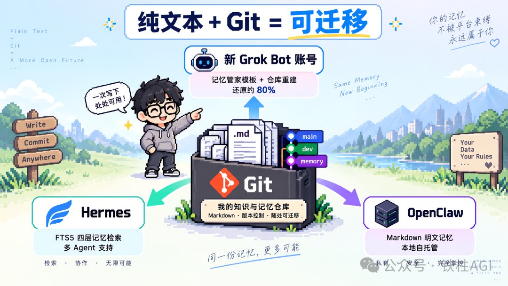
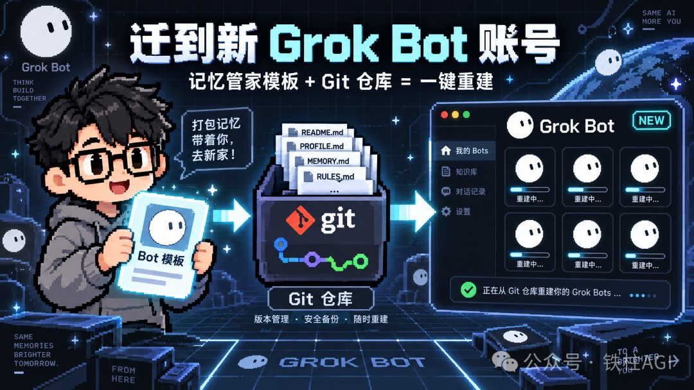

西堂 picks · 13/24
Grok Bot 百万撤离：一套完善的 Agent 系统备份方案
@cgnot996 · 铁柱AGI · Fri Sep 11 01:31:12 +0000 2026
如果你花了几个星期调教了七八个 Grok Bot (xAI's AI assistant that comes with its own computer)，每个都有自己的记忆 (memory (facts the bot keeps between chats))和工作流 (workflow (a chain of steps done in order))。
结果某天 Grok Bot 额度 (quota (how much use your plan allows))告罄了。
或者出现什么更好的工具想要迁移。
那些 Bot 里的记忆、设定、积累的决策日志，怎么带走？
这些 Bot 不是空壳。
有的记得你公众号的发布节奏和选题偏好，有的存着你所有的接口配置，有的知道每一件商品的上下架规则。
这些东西不是写在初始设定里的。
是 Bot 在日复一日的使用中慢慢积累的记忆。你跟它说过一次的事，它记住了。你纠正过一次的错误，它不再犯了。
然后你会发现一个问题：Grok Bot 没有官方的记忆导出接口。
你在 Bot 里积累的东西，本质上是跟着账号走的。额度停了，账号没了，这些记忆就没了。
我搭了一个「记忆管家」Bot，专门解决这个问题。
它干的事情很简单：让每个 Bot 把自己的记忆和设定写成 Markdown (a simple way to format text with symbols) 文件，提交到私有 Git 仓库。
额度没了，仓库还在。
记忆管家是什么
记忆管家干三件事：
枚举 Bot
列出你账号下所有 Bot，让你圈定要备份的
逐个通知
给每个 Bot 发消息，要求它导出自己的设定和记忆
整理归档
收齐后按 Bot 分类，push 到私有 Git 仓库
为什么这么做？因为 Grok Bot 没有官方导出接口，但 Bot 自己能读到记忆，就能写出来。用 Git 存，是因为纯文本任何平台都能读，版本历史还能回溯。
Grok Bot 的记忆分两层：全局记忆和 Bot 独立记忆。全局记忆所有 Bot 共享，独立记忆只有自己能读到。备份时分开存，恢复时才不会乱。
有个关键设计：每次都是全量快照，Git 替你存增量。
不用纠结哪些记忆变了，每次覆盖写，Git 自动记录每次的差异。
还有密钥扫描，不存明文 token。
我给记忆管家一个 Gitee 私有仓库地址，它枚举了我账号下 21 个 Bot，建议我先圈 7 个试运行。

实测一遍
圈定名单后，记忆管家逐个给 Bot 发消息，要求导出记忆。
有的 Bot 写完会主动汇报，有的静默。
这是实测中发现的一个坑。后来我在指令里加了一句「写完必须汇报」，回执就稳定了。
记忆管家自己也会去共享的 /workspace 目录里找文件，不依赖回执。
首轮全量完成：7 个 Bot 全部入库，合计约 73KB，标记了 tag 2026-09-10。
密钥扫描无异常。
然后它问我要不要开定时备份，给了三个选项：每周日自动全量、先每周再定时间、暂不定时手动存档。
选了定时之后，这就不是临时迁移了，是随时灾备。不用等到出事才想起来搬，主动权在你手里。

仓库里有什么
进入仓库，结构很清晰：
bots/：每个 Bot 一个文件夹
meta/：全局元数据
shared-user-memory/：账号级共享记忆
README.md、RESTORE.md、CHANGELOG.md、registry.md：文档与索引
这么分是有原因的。bots/ 按 Bot 隔离，因为独立记忆互不通用。shared-user-memory/ 单独放全局记忆，所有 Bot 共享一份。RESTORE.md 记录恢复流程，换账号或换平台时照着做就行。

bots/ 下面是 7 个 Bot 的文件夹。
每个文件夹里有四个东西：
MEMORY.md：记忆全量备份
agent-spec.md：Bot 设定，包含名称、描述、bot-id
profile.md：身份信息
archive/：历史归档


拿「赛博小晚」举例。
它的 agent-spec.md 里记录了 bot-id、slug、名称和完整的 description。
这是它的身份证，迁到任何平台都能重建。

重点是 MEMORY.md，21KB，结构分三层：
身份 profile：它是谁、权限来源、用户与账号
历史决策与职责：角色职责、关键内容决策、人设边界、操作日志
当前现场快照：Routines、正在进行的任务
一个文件把这个 Bot「是谁、干过什么、现在在做什么」全记下来了。

怎么用这套备份迁走
备份是纯 Markdown，这意味着它不绑定任何平台。

迁到新的 Grok Bot 账号：用记忆管家的模板加上 Git 仓库，在新账号重建。
记忆管家从仓库读 RESTORE.md，逐个 Bot 恢复设定和记忆。
设定和记忆能还原约 80%。当然，Bot 在云电脑里生成的私有文件（脚本、缓存、中间产物）不在默认备份范围内，还原后需要重新配置环境、补充这些欠缺的信息——如果需要，也可以让记忆管家把指定目录一起备份。对话历史不做迁移，第三方服务的登录状态需要重新授权。

迁到 Hermes 或 OpenClaw：这两个本地 Agent (an AI that takes steps on its own to finish a task) OS 本身就支持多 Agent，而且都是 Markdown 明文记忆。
把每个 Bot 的 MEMORY.md 放进对应的记忆目录，agent-spec.md 里的 description 改成系统提示词 (prompt (the instruction you give the AI))，就能重建出同样的多 Agent 系统。
Hermes 用 FTS5 做四层记忆检索，OpenClaw 直接把记忆存在 Markdown 文件里。
不需要任何转换工具，纯文本就是通用格式。
核心就一句话：纯文本加 Git，等于可迁移。只要备份是 Markdown，任何 Agent 都能读。
最后
我把记忆管家做成了可分享的 Bot 模板，直接添加就能用：
https://x.ai/bot/9Tq1f0aSurCP7UJHm98zy
添加后给它一个私有 Git 仓库地址，圈定要备份的 Bot，剩下的它自己来。
记忆写进 Git，才是你的。
你在 Grok Bot 里搭了什么工作流？有没有担心过额度没了之后怎么办？评论区聊聊。
Source: https://x.com/cgnot996/status/2098222795847315967
← Grok Bot Webhook + 快捷指令：知识自动入库流水线搭建 Grok Bot 额度超长续航保姆级新手指南（直接发给 Bot！） →